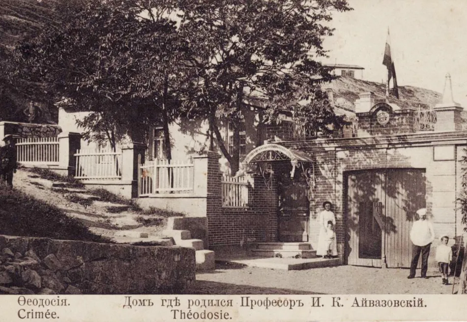
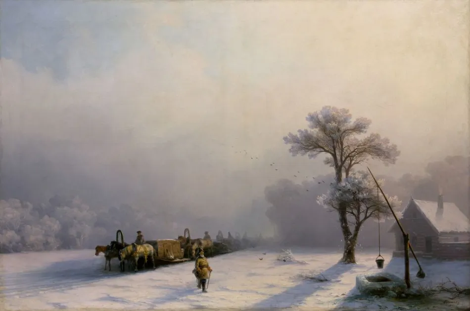
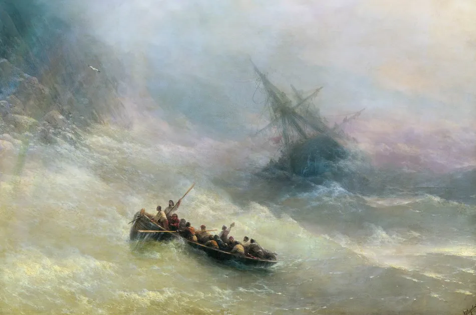
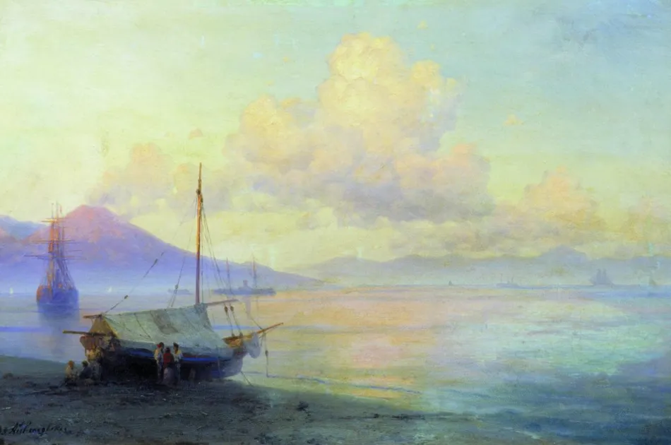

Ivan Constantinovich Aivazovski
Russian marine painter of Armenian origin, collector, philanthropist
About
Ива́н Константи́нович Айвазо́вский – русский живописец-маринист армянского происхождения, коллекционер, меценат.
Будучи художником с мировой известностью, Иван Константинович Айвазовский предпочитал жить и работать на своей родине — в Крыму. Айвазовский наиболее известен своими морскими пейзажами, которые составляют больше половины его работ. Художник считается одним из величайших маринистов всех времён.
Ivan Konstantinovich Aivazovsky - Russian marine painter of Armenian origin, collector, philanthropist.
Being a world famous artist, Ivan Konstantinovich Aivazovsky preferred to live and work in his homeland - in the Crimea. Aivazovsky is best known for his seascapes, which make up more than half of his work. The artist is considered one of the greatest marine painters of all time.
History
Дом в котором родился Айвазовский | The house where Aivazovsky was born
Portfolio
Зимний обоз в пути, 1857 г. | Winter wagon train on the way, 1857
Радуга, 1873 г. | Rainbow, 1873
Неаполитанский залив утром, 1893 г. | Gulf of Naples in the morning, 1893